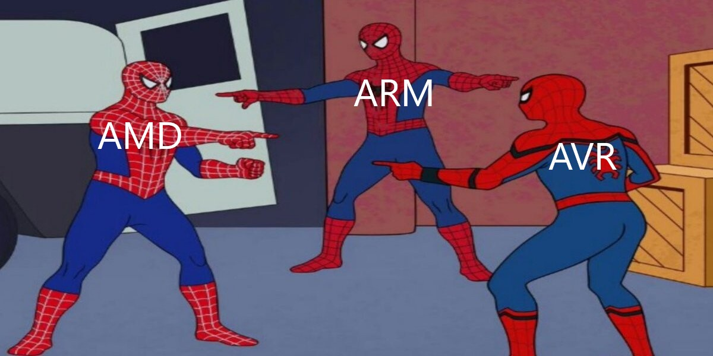

Приветствую тебя, Странник. Уж не знаю, как ты сюда попал, но если уж ты сюда попал, то вот тебе список книг по программированию, которые я читал. Может, тоже почитаешь.
Собственно, список:
"Грокаем алгоритмы", Адитья Бхаргава
"Computer Science для программиста-самоучки", Альтхофф Кори
"Что такое тестирование", Ольга Назина (читал не до конца)
"Современные операционные системы", 4-е издание, Эндрю Таненбаум, Херберт Бос
"Игровой движок. Программирование и внутреннее устройство", Джейсон Грегори (некоторые главы и разделы я пропустил)
"Компьютерные сети", 6-е издание, Эндрю Таненбаум, Ник Фимстер, Дэвид Уэзеролл
Тут не все художественные книги, только некоторые. Просто захотел поделиться.
Братья Стругацкие, "Обитаемый остров"
Терри Пратчетт, "Плоский мир" (частично)
Братья Стругацкие, "Жук в муравейнике"
Братья Стругацкие, "Понедельник начинается в субботу"
Братья Стругацкие, "Волны гасят ветер"
Мемчик

Я после прочтения книги про архитектуру компьютера. Давно не читал, кстати. Надо будет как-нибудь вернуться к чтению
Если ты смог прочиать книгу, это не значит, что ты можешь её написать
— кто-то
Если ты смог прочиать книгу по операционным системам, это не значит, что ты можешь написать операционную систему
— я